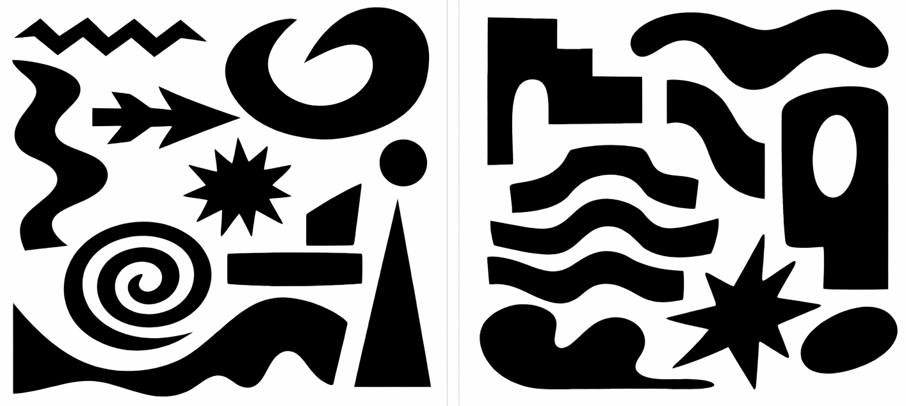
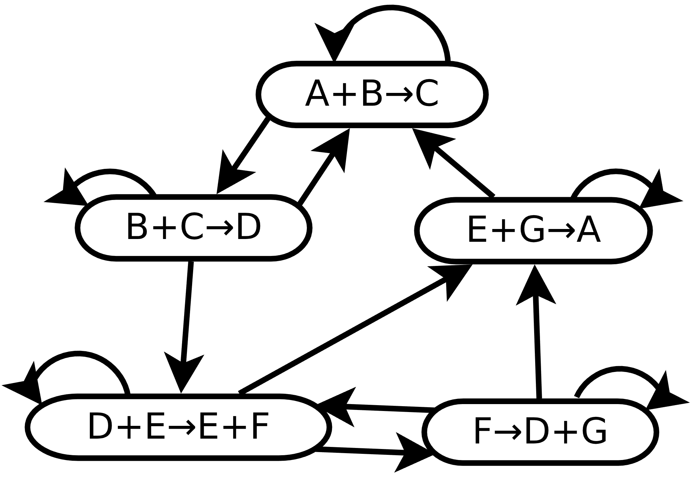
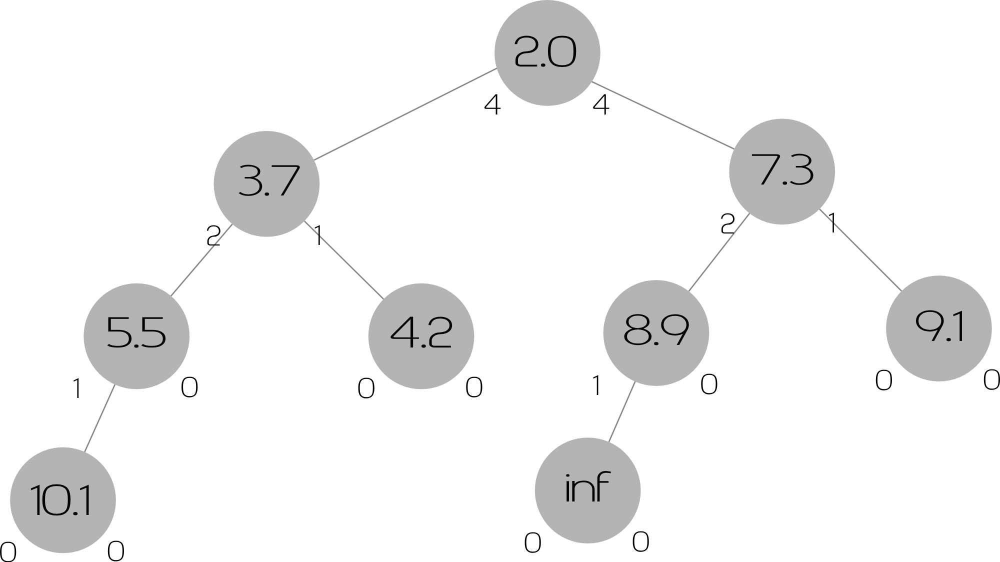
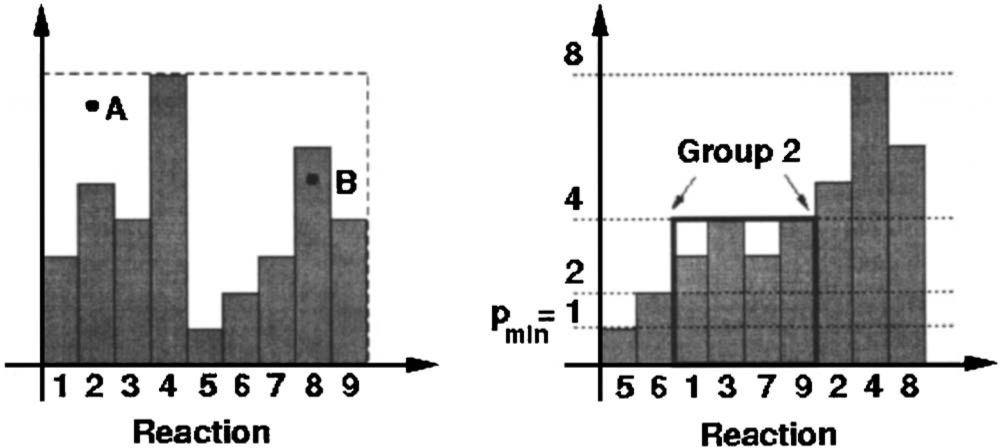
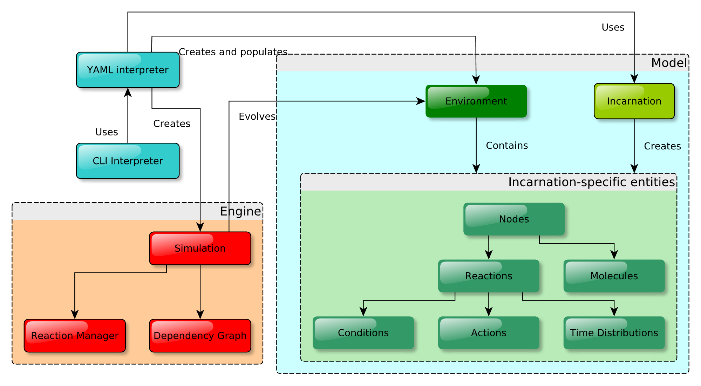

MICRO-MACRO COMPUTATIONAL MODELS: THEORY, APPLICATIONS AND EMERGENT PROPERTIES
Module 2
Danilo Pianini - 2026-04-16
Part 1: Nature-inspired systems and emergence
Context: large-scale open systems
Typical setting:
- Networked systems with many participants
- Heterogeneous devices (capabilities, energy, sensors/actuators)
- Partial knowledge, unreliable communication
- Dynamic topology (mobility, churn)
- Situatedness: space and time matter
- No stable coordinator
Engineering problem: Collective Adaptive Systems (CASs)
We want systems that are:
- Distributed and scalable
- Adaptive to changes (environment, participants, goals)
- Robust to failures and uncertainty
- Maintainable and evolvable over time
Key question:
How do we engineer global behavior from local components?
The “obvious” approach: centralize
Pipeline:
- Gather data to a central point
- Compute decisions centrally
- Push actions back to devices
Typical issues:
- Single point of failure
- Scalability bottleneck
- High latency (worse at high density)
- Privacy and governance concerns
- Inefficient use of network/computation at the edge
So… decentralize?
- No single coordinator
- Local interactions only
- No global state
- No single control loop
- Local interactions must produce coherent global behavior
How do we design these systems reliably?
Nature inspiration (general)
Bio-inspired design as engineering transfer:
- Identify a function that nature performs well
- Abstract the mechanism (not the biological details)
- Re-implement under engineering constraints
- Validate against measurable requirements
Gecko-inspired dry adhesion

- Function-driven design (adhesion without glue)
- Mechanism abstraction (micro-/nano-structures to increase contact)
- Engineering outcome (reusable, scalable dry adhesives)

Shinkansen series 500
- Tunnel boom: sonic boom-like noise when exiting tunnels at high speed
- Caused by buildup and rapid release of pressure waves
- Constraints: need to maintain high speed and passenger comfort
What can we learn from nature to solve this?
Shinkansen series 700
- Solution: geometry inspired by kingfisher beak
- Outcome: reduced noise, improved aerodynamics
Back to CAS: what nature can teach
For collective adaptive systems we look for:
- Leaderless coordination
- Local sensing + local communication
- Feedback loops and self-regulation
- Robustness through redundancy and adaptation
Core idea:
Local rules can produce macroscopic structure.
Self-organising systems
One way to tackle these challenges is through systems that self-organise.
- Self-organisation is a process in which a system spontaneously organizes itself into a structured state without external control.
- It is a bottom-up process in which local interactions among components lead to the emergence of global patterns or structures.
- Self-organisation is often observed in natural systems, such as biological organisms, ecosystems, and social systems.
- It can also be applied to artificial systems, such as robotics, distributed computing, and complex networks.


Part 2: Simulation paradigms and modeling choices
Why simulation for CAS
Simulation is the practical way to:
- test hypotheses on collective behavior at scale
- explore what-if scenarios safely (no harm, no disruption)
- study scalability limits and failure modes before deployment
- build repeatable and comparable experiments
Why simulation for CAS
A model is a simplified representation of reality:
- keep what matters for the question we are asking
- abstract away what is irrelevant or infeasible to reproduce
We simulate when the real process:
- takes too long
- is hard to replicate in controlled conditions
- is dangerous to replicate
- is beyond our technical capacity
Simulation in the engineering loop
For collective systems, simulation is used for:
- prototyping (quick feedback on system-level behavior)
- testing (including regression tests)
- debugging (replaying scenarios across runs)
- profiling (performance and scalability assessment)
Simulation semantics
Modeling choices affect outcomes.
Key dimensions:
- discrete vs continuous time
- time-driven vs event-driven
- deterministic vs stochastic evolution
Time-driven vs event-driven
Time-driven (ticks):
- time advances in fixed steps
- system state is updated at each tick
- “simultaneity” is enforced within a tick
Event-driven (discrete-event simulation):
- time advances to the next scheduled event
- events are processed one by one
- if two events share a timestamp, an execution order still exists (and may matter)
Synchronous vs asynchronous scheduling
Synchronous:
- all agents update together (typical in tick-based ABM tools)
- easy to reason about, but introduces artificial simultaneity
Asynchronous:
- agents update at different times
- closer to many real distributed settings
- ordering effects become part of the model
Stochasticity and reproducibility
In computer simulation, reproducibility requires:
- controlling random seeds explicitly
- understanding that parallelism can introduce non-determinism
- making ordering assumptions explicit (especially in discrete-event simulation)
Practical rule:
- every result should specify: model, parameters, seeds, and execution configuration
Monte Carlo
Exercise: compute the overall area of these shapes:

Monte Carlo
Exercise: compute the overall area of these shapes:
- Hint: we can inscribe them in a rectangle
Monte Carlo
Exercise: compute the overall area of these shapes:
- Hint: we can inscribe them in a rectangle
- Hint: we can assume we have a method to check whether a coordinate is inside a shape
Monte Carlo
Exercise: compute the overall area of these shapes:
- Hint: we can inscribe them in a rectangle
- Hint: we can assume we have a method to check whether a coordinate is inside a shape
- Hint: we can generate random coordinates in the rectangle
Monte Carlo
Exercise: compute the overall area of these shapes:
Procedure:
- Generate $N$ random coordinates in the rectangle $w \times h$ rectangle
- Let $M$ be the number of random coordinates that are inside the shapes
- Estimate the area as $\frac{M}{N}wh$
Monte Carlo framing
Two extremes:
- exhaustive exploration (often infeasible)
- sampling-based exploration (Monte Carlo)
Monte Carlo method:
- randomly explore part of the space
- repeat many times
- aggregate results into estimates
Simulation as a Monte Carlo run
Simulation is often one step in a pipeline:
- choose parameters (or sample them)
- run multiple seeds per configuration
- compute summary statistics (mean/variance/quantiles)
- estimate uncertainty (confidence intervals)
Batch thinking
A single run answers: “what happened once”
A Monte Carlo experiment answers: “what tends to happen”
Good practice:
- separate model specification from experiment design
- plan what you measure before running batches
- keep outputs minimal but sufficient for analysis
Alchemist
a (meta-)simulator for pervasive computing
- event-driven, discrete-event
- reproducible runs (explicit seeds, deterministic)
- batch mode for Monte Carlo experiments
- open-source, written in Java/Kotlin/Scala
- https://alchemistsimulator.github.io
Historical origin: stochastic chemistry
Problem setting:
- a container with a finite number of molecules
- reactions occur probabilistically
- we want to predict the system evolution over time
Why classic (continuous) chemistry is insufficient here:
- concentrations are treated as real numbers
- accurate mainly at very large molecule counts
- breaks down when discreteness matters
Kinetic Monte Carlo (Gillespie) — the core idea
Represent chemistry as:
- reactions with rates: $r \triangleq A + B\xrightarrow{\mu_r} C$
- each reaction $r$ is an independent stochastic event whose likelihood (propensity)
depends on the reactant counts and the rate constant $\mu_r$:
- $a_R = \mu[A][B]$
Algorithm sketch:
- compute propensities for all reactions $R$ from the current state
- sample the next reaction to fire:
- $P(next = r) = \frac{a_r}{\sum_{i \in R} a_{i}}$
- sample the time increment to the next event
- $\Delta t = \frac{-\ln \left(\rho \right)}{\sum_{i \in R} a_{i}}$
- where $\lambda = \sum_{i \in R} a_{i}$ and $\rho$ is a uniform random number in $(0,1)$
- update the state and repeat
Why simulator design matters (Gillespie as a case study)
Naïve kinetic Monte Carlo is correct, but:
- recomputing everything at every step is expensive
- selecting the next event can dominate runtime
Goal:
keep exact stochastic semantics while scaling to large reaction sets
Solve the problem: base algorithm (Gillespie / KMC)
Algorithm:
- Set simulation time $T = 0$
- For each reaction $r \in R$, compute propensity $a_r$
- Select next reaction $\mu$ with $$P(r=\mu)=\frac{a_r}{\sum_{j\in R} a_j}$$
- Execute $\mu$ (update molecule counts)
- Advance time: $$T \leftarrow T_{\text{prev}} + \frac{-\ln(\rho)}{\lambda},\quad \lambda=\sum_{j\in R} a_j,\ \rho\sim U(0,1)$$
- Go to 2
Base algorithm: data structure choice (where the cost is)
To sample reaction $\mu$:
- store reactions + propensities
- sample $x \sim U!\left(0, \sum_{j\in R} a_j\right)$
- scan cumulative sum until it exceeds $x$
Cost:
- selection is linear in $|R|$ per event
- plus recomputing propensities at every step
This is fine for small $|R|$, but it does not scale.
Speed-up 1: dependency graph
Observation:
- propensities depend on reactants
- only reactions that share reactants/products are affected by a firing event
Idea:
- maintain a dependency graph: for each reaction, which propensities must be updated if it fires
Data structure:
- map: $r \mapsto { r_1, r_2, \dots }$ (affected reactions)
Effect:
- update only a subset of propensities, often much smaller than $|R|$
Speed-up 1: dependency graph (picture)

Speed-up 2: “next reaction” method (time-based selection)
Instead of sampling the next reaction by propensity:
- generate a putative firing time $\tau_r$ for each reaction $r$
- select the smallest $\tau_r$
- when propensities change, update only affected $\tau_r$ (via dependency graph)
Key requirement:
- we need fast access to the smallest putative time, in $O(1)$ (or near)
- update-key (reorder) in $O(\log |R|)$
- update only affected reactions
Best-known structure:
- binary heap / indexed priority queue

Speed-up 3: random reuse (memorylessness)
Random generation can dominate in chemical simulators. We can reduce RNG calls using exponential memorylessness.
If at time $T$ a reaction had previous putative time $\tau_p$ with propensity $a_p$, and after an update its propensity is $a_c$:
$$ \tau_c = \frac{a_c(\tau_p - T)}{a_p} + T $$
Notes:
- valid because exponential distribution is memoryless
- applies when updating dependent reactions that did not fire
Beyond heaps: Slepoy’s algorithm (amortized $O(1)$ idea)
Idea
- group reactions by propensity ranges
- sample a group, then a reaction inside the group
- updates are constant-time if groups are stable
If the number of groups is independent of $|R|$:
- selection and updates can be $O(1)$

Slepoy’s algorithm: why it’s not universal
- assumes propensities are finite and stable (not changing much over time)
- often true in “pure chemistry”
- not guaranteed in general systems (e.g., mobile/distributed settings)
Why Alchemist was built
Goal: start from a fast stochastic (chemical) DES engine and extend it to model pervasive/situated/networked systems.
Design intent:
- keep the performance advantages of kinetic Monte Carlo
- add the abstractions needed for CAS experiments:
- space and environments
- mobility and dynamic neighborhoods
- heterogeneous nodes
- pluggable time distributions and scheduling
General pattern: no free lunch
Optimization is based on assumptions about the model and its dynamics. Generalization breaks assumptions, invalidating optimizations.
There exist a trade-off between generality and performance
From chemistry to pervasive computing
Requirements
- Multiple compartments (from now on: nodes)
- Molecules can be different data types
- Node mobility
- Non-Markovian events
- More flexible concept of reaction
- …wil retaining high performance
Idea
Instead of using a classic Agent-Based Simulator (ABS) and optimizing at the simulation level:
can we start from kinetic Monte Carlo and extend it until it supports all the abstractions we need?
Multiple compartments
Extension
- So far: a single container with molecules
- Next: multiple intercommunicating containers (nodes)
Changes
- Introduce neighborhoods: which compartments can communicate with each compartment
- Introduce molecule transfer between compartments
- Possibly different reaction sets per compartment
Challenges
- Who decides whether two compartments are communicating?
- How to model a molecule moving toward a new node?
- How does the dependency graph change?
Spatial dependency graph
- There are more reactions: each node has its “copy”
- A reaction may affect propensities:
- locally
- in the neighborhood
- globally
- The fewer bindings between reactions, the more efficient the dependency graph
- We want to detect the context of reactions and filter dependencies accordingly
Possible solution (concept)
- Define three contextual levels: local, neighborhood, global
- Assign each reaction:
- an input context: which parts of the environment it reads to compute its propensity
- an output context: which part of the environment it modifies when it fires
- A reaction
r1may influence a reactionr2if at least one holds:r1andr2belong to the same compartmentr1’s output context is globalr2’s input context is globalr1’s output context is neighborhood andr2belongs tor1’s neighborhoodr2’s input context is neighborhood andr1belongs tor2’s neighborhood- both
r1’s output context andr2’s input context are neighborhood, and there exists a compartment shared by the two neighborhoods
Evolution (still under active research)
React to changes in the environment (make the dependency graph implicit): Reactive DES
Non-Markovian events
Example
Every second, an external device injects some quantity of molecules within a compartment.
- the event happens precisely every second: not a Poisson process
- its time distribution is a $\delta$-Dirac comb
Algorithms
- Basic Gillespie is hard to adapt: selection is propensity-based, tied to the Markovian model
- “Next reaction” uses putative times:
- can simulate events with arbitrary time distributions (if we can estimate next occurrence time)
- random reuse is NOT allowed for non-exponential events
- Slepoy’s algorithm is not applicable because it relies on finite stable propensities
Alchemist conceptual model
Core concepts:
- Environment (space + constraints)
- Neighborhoods (connectivity)
- Nodes (devices / agents / compartments)
- Reactions (what can happen, and when)
- Concentrations (data units)
- Molecules (data accessors)
Alchemist meta-model

Alchemist meta-model

Alchemist architecture, and meta-simulator design

- Alchemist does not prescribe a specific modeling language or API
- It provides a set of core abstractions that can be used to build different simulators on top of it
- A realization of the meta-model is called an incarnation in the simulator jargon
- Existing incarnations: Biochemistry, SAPERE, Scafi, Protelis, JaKtA (external), Collektive (external)…
SAPERE in one slide

SAPERE is a research project (CORDIS 256873) proposing a chemical-style coordination model for collective adaptive systems: https://cordis.europa.eu/project/id/256873
Core concepts:
- LSA (Live Semantic Annotation): a structured tuple describing what a component/service is and what it currently knows/advertises (data + semantic tags + context).
- LSA Space: an associative space hosting a multiset of LSAs, supporting pattern matching and contextual retrieval.
- Eco-laws: chemical-like rewrite rules that match LSAs in the space and produce/update/remove LSAs, enabling self-organization.
Operating Alchemist
Checkout: https://github.com/AlchemistSimulator/SAPERE-incarnation-tutorial
In SAPERE-incarnation-tutorial:
- Simulations are YAML files in
src/main/yaml/ - A file
SIMNAME.ymlbecomes a Gradle task:./gradlew SIMNAME
- If
CI=true, the UI is not launched (headless execution)
highlight: “simulation = code + experiment” lives in a single YAML spec.
YAML in 90 seconds (only what we need)
(for more, YAML in Y minutes)
Maps and lists:
key: value
list:
- item1
- item2
Multiline strings (> = fold newlines into spaces):
program: >
{token} --> {firing}
Anchors and references (write once, reuse):
_send: &send
- time-distribution: 1
program: "{token} --> {firing}"
- program: "{firing} --> +{token}"
programs:
- *send
Minimal SAPERE simulation file
# 00-minimal.yml
incarnation: sapere
Meaning:
- selects the SAPERE incarnation (how contents + reactions are interpreted)
- produces a default environment (an empty, infinite 2D Euclidean space)
Add nodes + ensure connectivity
# 01-nodes.yml
incarnation: sapere
network-model:
type: ConnectWithinDistance
parameters: [5]
deployments:
- type: Point
parameters: [0, 0]
- type: Point
parameters: [0, 1]
Key takeaways:
- deployments = where nodes are placed
- network-model = who is in the neighborhood (model choice)
YAML: type + parameters (Alchemist class loader)
Alchemist can load arbitrary classes as long as they implement the expected interface/trait :contentReference[oaicite:0]{index=0}.
Canonical syntax:
something:
type: ConnectWithinDistance
parameters: [0.5]
Rules:
-
typecan be fully-qualified or a simple name- if it contains a
., it is treated as fully-qualified - otherwise it is resolved in the default packages for that interface
- if it contains a
-
parameterscan be a List or a Map- List → passed positionally to a compatible constructor
- Map → passed as named arguments (requires Kotlin + reflection)
-
The loader injects contextual parameters automatically (e.g., Environment, Node, Reaction, TimeDistribution…), so you should not specify them manually
Reference: https://alchemistsimulator.github.io/reference/yaml/index.html
Where to find “loadable components” (classes to put in type:)
Look up the expected interface (e.g., LinkingRule, Deployment, Action, Environment) in the API docs, then browse:
- implementations in the default packages (for simple names)
- constructors + required parameters (
parameters:)
Links:
-
Dokka / KDoc API docs (website):
-
Javadoc.io (always points to published artifacts): https://www.javadoc.io/doc/it.unibo.alchemist/alchemist
-
YAML reference (syntax + expectations per section): https://alchemistsimulator.github.io/reference/yaml/index.html
Scale up: many nodes in a circle
# 02-manynodes.yml
incarnation: sapere
network-model:
type: ConnectWithinDistance
parameters: [0.5]
deployments:
type: Circle
parameters: [10000, 0, 0, 10]
highlight: changing density / radius / range changes the graph, hence the dynamics.
Regular grid vs perturbed grid
# 03-grid.yml
deployments:
type: Grid
parameters: [-5, -5, 5, 5, 0.25, 0.25, 0, 0]
# 04-perturb-grid.yml
deployments:
type: Grid
parameters: [-5, -5, 5, 5, 0.25, 0.25, 0.1, 0.1]
Grid parameters:
- bounds: minX, minY, maxX, maxY
- spacing: stepX, stepY
- perturbation: dx, dy
Insert LSAs (contents) in selected areas
# 05-content.yml
deployments:
type: Grid
parameters: [-5, -5, 5, 5, 0.25, 0.25, 0.1, 0.1]
contents:
- molecule: hello
- in:
type: Rectangle
parameters: [-1, -1, 2, 2]
molecule: token
Interpretation (SAPERE):
molecule:strings are parsed as LSAs (tuples), e.g.,{token}
“Dodgeball”: first SAPERE program (+ operator)
# 06-send.yml (core excerpt)
programs:
-
- time-distribution: 1
program: >
{token} --> {firing}
- program: "{firing} --> +{token}"
Semantics:
- first eco-law: transforms
{token}into{firing}at rate 1 - second eco-law: when
{firing}exists, send{token}to a neighbor (+)
highlight: if time-distribution is omitted, SAPERE assumes ASAP scheduling.
YAML reuse: anchors and references
# 07-yaml-vars.yml (core excerpt)
_send: &send
- time-distribution: 1
program: >
{token} --> {firing}
- program: "{firing} --> +{token}"
deployments:
...
programs:
- *send
Use case:
- keep programs DRY (write once, reuse many times)
Counting passes inside the LSA
# 08-send-count.yml (core excerpt)
_send: &send
- time-distribution: 1
program: >
{token, N} --> {firing, N}
- program: "{firing, N} --> +{token, N+1}"
contents:
in: { type: Rectangle, parameters: [-0.5, -0.5, 1, 1] }
molecule: token, 1
Notes:
- LSAs can carry structured state (
N) - expressions like
N+1are evaluated during rewriting
Diffusion to all neighbors (*) + stabilization
# 09-diffuse.yml (core excerpt)
_send: &send
- time-distribution: 1
program: >
{token} --> {token} *{token}
- program: >
{token}{token} --> {token}
Reading:
- first eco-law: replicate
{token}to all neighbors (*) - second eco-law: remove duplicates (cleanup rule)
highlight: diffusion patterns often need propagation + cleanup.
Best-value selection via guards
# 10-math.yml (core excerpt)
_send: &grad
- time-distribution: 1
program: "{token, N} --> {token, N} *{token, N+1}"
- program: >
{token, N}{token, def: N2>=N} --> {token, N}
Meaning:
- propagate an increasing counter
- keep only the minimum
Namong duplicates using a guard (def:)
Monotonic dynamics
In the previous example, each node keeps the minimum value it ever sees:
- propagation generates candidates (
N+1) - selection keeps the best (
minvia guard)
Problem under topology changes:
- if a node previously had a good (small)
N, and later the source becomes farther (or unreachable), the node has no mechanism to increase its value - the system can only “improve” monotonically toward lower values
Result:
after a topology change, the configuration can become illegitimate and stay illegitimate forever.
If the topology changes and some nodes keep an outdated too-small value:
- how can we force the system to forget stale information?
- Answer 1: progressive raising (periodically increase values so stale minima eventually disappear)
- how can we make it converge again to a correct gradient?
- Answer 2: discard over a threshold (delete values that grow too large, useful when a component has no source)
Fix pattern 1: progressive raising
Add an eco-law that periodically increases the stored value:
- if information is fresh and supported by neighbors, min-selection keeps it low
- if information becomes stale (e.g., source moved away), raising pushes it upward
- eventually, a better-supported value replaces it, or it becomes “too old”
highlight: raising breaks the “only decrease” trap, enabling recovery.
Fix pattern 2: discard over a threshold
Add an eco-law that deletes values exceeding a threshold:
- in a connected component with a source, values remain bounded
- in a component without a source, values keep rising and eventually get deleted
- the system converges to “no gradient here” rather than a wrong finite distance
highlight: deletion restores legitimacy for segmented networks with no source.
Gradient with pure eco-laws
# 11-math-grad.yml (core excerpt)
_send: &grad
- time-distribution: 0.1
program: "{source} --> {source} {gradient, 0}"
- time-distribution: 1
program: "{gradient, N} --> {gradient, N} *{gradient, N+#D}"
- program: >
{gradient, N}{gradient, def: N2>=N} --> {gradient, N}
- time-distribution: 0.1
program: >
{gradient, N} --> {gradient, N + 1}
- program: >
{gradient, def: N > 30} -->
Key SAPERE primitives used:
#D= distance-to-neighbor (from the simulator environment)- guard-based min selection
- aging + deletion threshold
Slow value raising (a.k.a. the “rising value problem”)
This self-stabilizing gradient has an inherent asymmetry:
- repairs fast when values must go down
- repairs slow when values must go up
This phenomenon is widely discussed in the self-stabilization / aggregate computing literature (e.g., Beal et al.).
Why the asymmetry exists
The core update rule is effectively:
- propose candidate distances from neighbors:
N + #D - keep the minimum candidate (guard-based selection)
- add progressive raising to forget stale minima
Fast direction (decrease):
- as soon as any neighbor advertises a smaller value, everyone can adopt it immediately
Slow direction (increase):
- stale values are already minima
- the only way out is to age them upward step by step
Toy scenario: topology change that increases distance
Assume a node currently holds a correct value 5.
Topology changes (e.g., a link/path breaks), and the correct value becomes 15.
What happens next?
- the node still holds
5(a very good minimum) - neighbors also hold low values due to the previous configuration
- the min rule keeps selecting the stale low values
- only the aging eco-law can push them upward
Why it becomes slow (propagation of “bad news”)
Aging is local and bounded:
- each node increments its value periodically (here:
N := N + 1at a given rate)
But the node’s value is also constrained by neighbors:
- if any neighbor still advertises a slightly smaller stale value, the min-selection will keep pulling the value back down
Net effect:
- “good news” (smaller distance) propagates as a fast wave
- “bad news” (larger distance) propagates as a slow wave limited by the aging rate
Consequence for collective algorithms
During slow raising, gradients can be wrong for a long time:
- routing may keep following a path that no longer exists
- channels/regions derived from gradients may remain inconsistent
- any behavior that assumes “distance is up-to-date” can lag behind reality
highlight: the system is still converging, but the convergence time can be dominated by slow raising.
What controls the time scale (intuition)
Two knobs dominate:
-
Aging frequency / step size
- how quickly values can increase locally
-
How far the value must rise
- e.g., from 5 to 15 means at least 10 “raising steps”
- plus extra delay due to neighbor interactions keeping values artificially low
Rule of thumb:
the farther the “upward correction”, the longer the transient—often much longer than the “downward” repair.
Sets/lists inside LSAs: “carry a trace”
# 12-sets.yml (core excerpt)
_send: &grad
- time-distribution: 1
program: "{token, N, L} --> {token, N, L} *{token, N+#D, L add [#NODE;]}"
- program: >
{token, N, L}{token, def: N2>=N, L2} --> {token, N, L}
contents:
molecule: token, 0, []
Notes:
Lis a list;add [#NODE;]appends the current node id- this enables path-/trace-like information flows
Custom time distributions (DiracComb)
# 13-timedistribution.yml (core excerpt)
_send: &grad
- time-distribution:
type: DiracComb
parameters: [0.5]
program: "{token, N, L} --> {token, N, L} *{token, N+#D, L add [#NODE;]}"
- program: >
{token, N, L}{token, def: N2>=N, L2} --> {token, N, L}
highlight: eco-laws can be scheduled by non-Markovian distributions.
Variables system: sweeps + formulas + reuse
# 14-yaml-vars.yml (core excerpt)
variables:
rate: &rate
type: GeometricVariable
parameters: [2, 0.1, 10, 9]
size: &size
min: 1
max: 10
step: 1
default: 5
mSize: &mSize
formula: -size
sourceStart: &sourceStart
formula: mSize / 10
sourceSize: &sourceSize
formula: size / 5
Use in deployments:
deployments:
type: Grid
parameters: [*mSize, *mSize, *size, *size, 0.25, 0.25, 0.1, 0.1]
contents:
in: { type: Rectangle, parameters: [*sourceStart, *sourceStart, *sourceSize, *sourceSize] }
Mobility: combine SAPERE programs + movement events
# 15-move.yml (core excerpt)
_move: &move
- time-distribution: 0.5
type: Event
actions:
- type: BrownianMove
parameters: [0.1]
deployments:
...
programs:
- *grad
- *move
Interpretation:
- SAPERE eco-laws handle coordination
- Events handle physical dynamics (mobility)
highlight: moving nodes ⇒ changing neighborhoods ⇒ different propagation paths.
Maps scenario (visualization-only note)
# 16-maps.yml (environment + neighborhood excerpt)
environment:
type: OSMEnvironment
parameters: ["maps/London.osm.pbf", true, false]
network-model:
type: LinkNodesWithinRoutingRange
parameters: [400]
Purpose in the tutorial:
- show that Alchemist supports complex environments (OSM maps) and routing-aware neighborhoods
- the SAPERE concepts remain the same (LSAs + spaces + eco-laws)
(No additional SAPERE primitives are introduced here; it is mainly a richer visualization setting.)
Part 3: Engineering self-organisation with aggregate programming
Programming languages and paradigms
A programming paradigm is a set of abstractions for thinking about computation.
A programming language is a concrete reification of one or more paradigms:
- it decides which abstractions are primitive
- it decides what can be composed
- it decides what is easy / hard / impossible to express
highlight: good abstractions let you describe the problem instead of the machine.
Paradigms shift “what you control”
Examples of “what becomes a primitive”:
- Imperative: variables, assignment, control flow (you control state updates)
- Object-oriented: objects + messages (you control encapsulation / interactions)
- Functional: functions + algebraic types (you control composition)
- Actor / message passing: isolated agents + asynchronous messages (you control concurrency boundaries)
abstraction hides a low-level mechanism, enabling scale and reuse.
CAS needs a paradigm-level tool
In Collective Adaptive Systems:
- computation is distributed
- interactions are local
- the system is open and dynamic
- the desired behavior is global
If you program “device by device”, you repeatedly re-implement:
- coordination
- diffusion / aggregation
- symmetry breaking
- fault tolerance / adaptation
highlight: this is exactly the kind of repetition paradigms are meant to eliminate.
Programming by fields
Computational field
A value defined over a network of devices:
- each device holds a local value
- together, these values form a field in space-time
Formally (intuition):
- a field is a mapping: Device → Value
highlight: the “computational machine” is the ensemble, not the single node.
Why fields fit CAS engineering
Field abstraction gives you, by construction:
- composability: build complex behaviors by composing functions
- modularity: encapsulate coordination patterns into reusable blocks
- scale independence: same code (if well designed) works for 10 or 10,000 devices
- robustness: self-organization + self-stabilization patterns
- platform separation: networking/sensors/actuators stay “under the hood”
Practical effect:
you write what global behavior you want, not who talks to whom.
Operationally: computing in rounds
Devices compute in asynchronous rounds.
There are two main models:
- All devices compute at a similar pace. Drift is possible, but not extreme. (proactive model)
- Devices compute when they receive a message or read an event. (reactive model, see This paper)
At every round, each device:
- gathers messages received from neighbors, reads sensors, and retrieves its previous local state
- computes its aggregate program (pure function), producing a result, a new local state, and messages to send to neighbors
- emits the messages to its neighbors
- sleeps until the next round
Function application on fields
If you can compute with ordinary functions locally, you can lift the same structure to fields.
- It is an extension to a distributed machine of the usual function application

Observe space: nbr (aka neighboring)
nbr(e) lets a device observe the most recent value of expression e computed by its neighbors.

Understanding the global and local views
Result type (conceptually): a neighboring field
- Local view: a map NeighborID → Value
- the local device is always included in the field
- it will be reduced to a single value at some point in the computation
- Global view: a field of neighboring fields (one per device)
neighboring, minimal examples
Shape:
fun <ID : Any, Shared> Aggregate<ID>.neighboring(local: Shared): Field<ID, Shared> // Definition, returns a neighboring field
val someField = neighboring(myValye) // Usage
Reducing (collapsing) neighboring fields
- Neighboring fields can be manipulated functionally, producing new neighboring fields, modelling computations that happen in the local neighborhood.
- At some point in the computation, the field must be reduced (or folded, or collapsed) to a scalar (local) value.
- Field collapses may or may not include the local device
Canonical examples
Neighbor minimum: (assuming myValue is numeric)
neighboring(myValue).all.values.min() // get the minimum value including the local device
neighboring(myValue).neighbors.values.min() // get the minimum value among neighbors only
Closest Device: (assuming position() returns the device position and distance computes distance between positions)
neighboring(myPosition).neighbors.idOfMinBy { (_, pos) -> distance(pos, myPosition) } // null if there are no neighbors
Evolve in time: rep (aka repeat, aka evolve)
rep gives each device a private state cell that persists across rounds.

evolve, minimal examples
Shape:
fun <Stored> evolve(initial: Stored, transform: (Stored) -> Stored): Stored // Definition
evolve(initial) { old -> transform(old) } // Usage
- first round:
old = initial - next rounds:
oldis the previously computed value
Global and local view
- From the global standpoint, everything is always a field, thus
Storedis still a field (one value per device, evolving over time) - From the local standpoint,
Storedis a scalar value:- it is private local memory, updated once per round
- it is not shared
- it cannot be a neighboring field (some of the aggregate computing semantics prohibit this)
Minimal examples
(local) Round Counter:
evolve(0) { x -> x + 1 }
Exponential moving average (filter sensor noise):
fun movingAverage(alpha: Double, sense: () -> Double): Double = evolve(sense()) { avg -> alpha * sense() + (1 - alpha) * avg }
Domain segmentation: if (aka branch)

if: domain segmentation (intuition)
In aggregate programming, if is not just local branching.
It creates sub-networks:
- devices taking the same branch remain aligned
- devices in different branches become disaligned
- values computed inside a branch are only meaningful within that branch’s domain
highlight: branching controls who can communicate about what.
If and other branching constructs
Domain segmentation applies in principle to all branching constructs used in aggregate code,
which may vary across languages: if, when, branch, switch, …
- But also short-circuiting operators like
&&and||!
Field projection (what happens to a Field across branches)
A Field created outside a branch is projected when used inside a branch:
- inside a branch you can only “see” neighbors that are aligned with that branch
- the projection happens automatically (no manual filtering)
Practical consequence:
someField.neighbors.sizecan change depending on the current branch
Minimal sketch:
val outerField = neighboring(localId.toDouble()) // assume it is φ{ 0→0.0; 1→1.0, 2→2.0, 3→3.0 }
if (localId % 2 == 0) {
neighboring(1) + outerField // the result is φ{ 0→0.0; 2→2.0 }
outerField.neighbors.values.min() // 2.0
} else { // device 0 does not execute this branch
// ...
}
if: why it matters (example)
Hop distance from the closest device where some condition is true:
Working version
fun Aggregate<Int>.hopDistanceTo(source: Boolean): Double = evolve(Double.POSITIVE_INFINITY) { distance ->
val throughNeighbor = neighboring(distance + 1.0).neighbors.values.min()
if (source) 0.0 else throughNeighbor
}
Non-working version
fun Aggregate<Int>.hopDistanceTo(source: Boolean): Double = evolve(Double.POSITIVE_INFINITY) { distance ->
if (source) 0.0 else neighboring(distance + 1.0).neighbors.values.min()
}
if (source)splits the system into source devices and non-source devices- non-source devices never see the sources!
- the underlying mechanism is called alignment: devices are aligned if they execute the same code and can communicate
Alignment, in short

structurally-equal programs can communicate
Alignment, in short

branching must break alignment
Stateful interaction: share
The evolve/neighboring pattern has a subtle inefficiency:
- inside the body,
neighboring(stored)shares the stored value (the old state from last round) - the value computed by the body is stored for next round, but shared with neighbors one round later
// Round T: source becomes active; stored=INFINITY → neighboring sends INFINITY; body returns 0.0; stores 0.0
// Round T+1: stored=0.0 → neighboring sends 0.0 → neighbors receive 0.0 and compute 1.0
// Two rounds are consumed: one to compute, one to broadcast the stored result
evolve(Double.POSITIVE_INFINITY) { stored ->
val throughNeighbor = neighboring(stored).minValue(Double.POSITIVE_INFINITY) + 1.0
if (source) 0.0 else throughNeighbor
}
share: combined evolution and interaction
share solves the issue by sharing the body’s return value directly, not the stored value:
fun <Stored> share(initial: Stored, body: (Field<ID, Stored>) -> Stored): Stored // Definition
share(initial) { received -> transform(received) } // Usage
- first round:
receivedis a field where every device contributesinitial - next rounds:
receivedis a field of each device’s body return value from the previous round - the return value is both stored and sent to neighbors — there is no phase lag
// Round T: source becomes active; body returns 0.0 and immediately sends 0.0 to neighbors
// Round T+1: neighbors receive 0.0 and compute min(0.0, …) + 1.0 = 1.0
// One round is enough: compute and broadcast happen in the same step
share(Double.POSITIVE_INFINITY) { received ->
val throughNeighbor = received.minValue(Double.POSITIVE_INFINITY) + 1.0
if (source) 0.0 else throughNeighbor
}
A brief history of aggregate programming languages
MIT Proto, 2006

The precursor of aggregate programming, based on the idea of amorphous computing.
- Originally developed at the MIT by Jonathan Bachrach and Jake Beal
- C++ with built-in OpenGL visualisation
- LISP-like syntax
- Re-implemented in Javascript as WebProto
- Discontinued in 2016 in favour of Protelis
(def gradient (src)
(letfed ((n infinity (mux src 0 (min-hood (+ (nbr n) (nbr-range))))))
n))
Protelis, 2015
The first higher-order aggregate programming language.
def distanceTo(source) {
share (distance <- POSITIVE_INFINITY) {
mux (source) {
0
} else {
foldMin(POSITIVE_INFINITY, distance + self.nbrRange())
}
}
}
- Originally developed at BBN Technologies and the University of Bologna primarily by Danilo Pianini
- with support from Jake Beal and Mirko Viroli
- Stand-alone, JVM-based, Java-interoperable domain-specific language
- Based on Xtext
- weakly typed
- Introduces the higher-order field calculus
- Actively maintained, but feature-frozen
ScaFi (Scala Fields), 2016
The first internal DSL implementing aggregate programming.

def distanceTo(source: Boolean): Double =
rep(Double.PositiveInfinity) (d => {
mux (source) { 0.0 } {
foldHoodPlus(Double.PositiveInfinity)(Math.min) {
nbr(d) + nbrRange
}
}
})
- Originally developed at the University of Bologna by Mirko Viroli and Roberto Casadei
- Internal DSL written in Scala 2
- Strongly typed, uses the Scala 2 type system natively
- JVM and JS versions
- Different semantics: partial alignment, non-reified fields
- Actively maintained, but feature-frozen (Scafi 3 based on Scala 3 is under development)
FCPP, 2019

The first native (C++14) implementation of aggregate programming.
DEF() double abf(ARGS, bool source) { CODE
return nbr(CALL, INF, [&] (field<double> d) {
double v = source ? 0.0 : INF;
return min_hood(CALL, d + node.nbr_dist(), v);
});
}
- Originally developed at the University of Turin by Giorgio Audrito
- Very high performance
- C++14 library
- Manually aligned via macros
- Can work on resource-restricted devices
What is missing?
| Properties | Protelis | ScaFi | FCPP |
|---|---|---|---|
| JVM compatibility | |||
| Android compatibility | ~ | ~ | ~ |
| JS compatibility | |||
| Native compatibility | ~ | ||
| iOS compatibility | |||
| Strictly typed | |||
| Transparent alignment | |||
| Complete alignment | |||
| Exchange support | ~ | ||
| Reified fields |
A matter of trade-offs
Internal DSLs have several desirable features:
- They are easier to maintain, as the syntax, compiler, and tooling are shared with the host language
- They are more familiar to mainstream programmers
- no need to learn an entire new language, it is just a library
- They can use types from the host language
but they also have some critical issues:
- Their syntax is restricted to valid fragments in the host language
- Language-level mechanisms, such as alignment, may “boil” up to the surface, making the language unpleasant
- and violating information hiding
Alignment when programming
- Alignment is a low-level mechanism and as such should be hidden when writing aggregate code
- Just as memory references are abstracted away when programming in Kotlin or Java
- Implementing alignment requires maintaining your own stack, so that when a communication act happens the information can be associated to the stack frame
Different frameworks make different choices:
- Protelis hides alignment under the hood
- It can do so because it is an external DSL whose interpreter has been realized from zero
- Scafi makes several compromises to align
- Fields are not reified, namely, operations of fields can be executed in dedicated contexts (
foldHood) but there is no way to have aField-typed object - Similar programs that should not align may align in Scafi (weak alignment)
- Functions are aligned via a stack lookup (
aggregatefunction), exposing a low-level mechanism and compromising performance
- Fields are not reified, namely, operations of fields can be executed in dedicated contexts (
- FCPP relies on C macros to align
- Alignment is not transparent
Why Collektive
Collektive answers the question:
what if we modify the host language compiler to align code strongly and transparently?
Collektive used Kotlin to do so as:
- Kotlin is becoming a reference language for mobile programming (Android is Kotlin-first)
- Kotlin is modern and supports nice-looking DSLs
- The Kotlin compiler can be enriched via plugins
- Kotlin is multiplatform, generating bindings for the JVM, native (incl. iOS), JS, and WASM
Collektive goals
| Properties | Protelis | ScaFi | FCPP | Collektive |
|---|---|---|---|---|
| JVM compatibility | ||||
| Android compatibility | ~ | ~ | ||
| JS compatibility | ||||
| Native compatibility | ||||
| iOS compatibility | ||||
| Strictly typed | ||||
| Transparent alignment | ||||
| Complete alignment | ||||
| Exchange support | ~ | |||
| Reified fields |
Collektive: how it feels
A few algorithms you have seen in previous classes
Adaptive Bellman-Ford (hop count)
fun <ID: Any> Aggregate<ID>.distanceTo(source: Boolean) = share(Double.POSITIVE_INFINITY) { distances ->
val throughNeighbor = distances.minValue(Double.POSITIVE_INFINITY) + 1
when {
source -> 0.0
else -> throughNeighbor
}
}
- what happens if we move
throughNeighborinside thewhen? - what happens if we use
Ints orLongs instead ofDoubles?
Adaptive Bellman-Ford (with custom metric)
fun <ID: Any> Aggregate<ID>.distanceTo(source: Boolean, metric: Field<ID, Double>) =
share(Double.POSITIVE_INFINITY) { distances ->
val throughNeighbor = (distances + metric).minValue(Double.POSITIVE_INFINITY)
when {
source -> 0.0
else -> throughNeighbor
}
}
Adaptive Channel
Broadcast
// Utility class, we can use Kotlin data types freely
data class DistanceValue<T>(val distance: Double, val value: T) : Comparable<DistanceValue<T>> {
operator fun plus(distance: Double): DistanceValue<T> = DistanceValue(this.distance + distance, value)
override fun compareTo(other: DistanceValue<T>): Int = distance.compareTo(other.distance)
override fun toString(): String = "$value@$distance"
}
// Simple broadcast implementation
inline fun <ID: Any, reified T> Aggregate<ID>.broadcast(source: Boolean, value: T): T {
val top = DistanceValue(infinity, value)
val myDistanceValue = share(top) { distancesToValues ->
val closest = distancesToValues.minValue() ?: top
if (source) DistanceValue(0.0, value) else closest + 1.0
}
return myDistanceValue.value
}
Distance between two sources
fun <ID: Any> Aggregate<ID>.distance(source: Boolean, destination: Boolean, metric: Field<ID, Double>) = broadcast(source, distanceTo(destination, metric))
Channel
fun <ID: Any> Aggregate<ID>.channel(source: Boolean, destination: Boolean, width: Double, metric: Field<ID, Double>): Boolean =
distanceTo(source, metric) + distanceTo(destination, metric) < distance(source, destination, metric) + width
Channel around obstacles
// Short-circuiting boolean operations work as branches!
fun <ID: Any> Aggregate<ID>.channelAroundObstacles(isObstacle: Boolean, source: Boolean, destination: Boolean, width: Double, metric: Field<ID, Double>): Boolean =
!isObstacle && channel(source, destination, width, metric)
Collektive: under the hood
General structure
- Domain-Specific Language
- Base abstractions
FieldAggregatePurelyLocalproject(Field)
- Core Machinery
- Interpreter implementation
- Network stub
- Compiled with the Compiler Plugin using the Gradle Plugin
- Base abstractions
- Compiler Plugin
- Requires the Base Abstractions
- Gradle Plugin
- Applies the Compiler plugin to any project
- Collektivize
- A Gradle plugin that generates “fielded” methods automatically
- Standard Library
- Compiled with the Compiler Plugin using the Gradle Plugin
- Functions for common operations
- Uses Collektivize to “field” the Kotlin standard library
- Compiled with the Compiler Plugin using the Gradle Plugin
Domain-specific language
Collektive introduces the following important abstractions:
Field: a view of a value, enclosing is local value and the neighboring values- fields can be manipulated using
mapand combined withalignedMap - fields can be converted into Kotlin
Maps, usingtoMaporexcludeSelf - fields can be converted to “scalar” values using
foldandreduceoperations
- fields can be manipulated using
Aggregate: the context of aggregate operations. Provides (internally or through extension functions)- (Core operation)
alignedOn(pivot: Any?, () -> Result): Result- aligns the code on the given pivot and runs the provided operation
- (Core operation)
exchanging(initial: Shared, body: YieldingScope<Field<ID, Shared>, Returned>): Field<ID, Shared>- generalized form of
exchangethat shares a value and can return arbitrary values - all other operators except
alignedOncould be rewritten in terms ofexchanging, but it would be inefficient
- generalized form of
exchange(initial: Shared, body: (Field<ID, Shared>) -> Field<ID, Shared>): Field<ID, Shared>exchangeshares a value, computes over the neighborhood view of such value, and returns aFieldwhose contents are sent back to every neighbor
- (Core operation)
neighboring(local: Shared): Field<ID, Shared>- Provided a value, builds the neighboring view of such value
mapNeighborhood(local: (ID) -> T): Field<ID, T>- Maps every surrounding device, provided its identifier, to a value
share(initial: Shared, body: (Field<ID, Shared>) -> Shared): Shared- simplified version of
exchangethat sends the same value to all neighbors
- simplified version of
sharing(initial: Shared, body: YieldingScope<Field<ID, Shared>, Returned>) -> YieldingResult<Shared, Returned>): Returned- generalized version of
sharethat can return arbitrary values
- generalized version of
evolve(initial: Stored, transform: (Stored) -> Stored): Stored- evolves a value in time, starting from
initialand computingtransformat each round
- evolves a value in time, starting from
- (Core operation)
evolving(initial: Stored, transform: YieldingScope<Stored, Returned>): Returned- generalized version of
evolve, returning aResult
- generalized version of
- (Core operation)
Domain-specific language
Collektive is designed for the aggregate code to meld into Kotlin natively. Names have been selected favoring a Kotlin-friendly syntax instead of the literature terms.
| Literature | Collektive |
|---|---|
rep |
evolve |
nbr |
neighboring |
share |
share |
exchange |
exchange |
All computations use Kotlin’s native types.
- With one caveat: types used in aggregate operations must be
@Serializable- Under the hood, Collektive uses
kotlinx.serializationto serialize the data
- Under the hood, Collektive uses
Domain-specific language
Aggregate branching
There is a missing item in the previous table:
| Literature | Collektive |
|---|---|
rep |
evolve |
nbr |
neighboring |
share |
share |
exchange |
exchange |
if |
???? |
Branching in aggregate programming is domain segmentation: operations inside a branch are aligned only with the devices that are in the same branch.
- Special problem: fields created outside of the branch need projection!
// Device with ID 0
fun Aggregate<Int>.myAlignmentTest(): Unit {
val myField = mapNeighborhood { 1 }
println(myField) // φ(localId = 0, localValue = 1), neighbors = { 1 -> 1, 2 -> 1, 3 -> 1 }
when (localId % 2) {
1 -> println(myField) // Branch not taken
else -> {
println(mapNeighborhood { 2 }) // φ(localId = 0, localValue = 2), neighbors = { 2 -> 2 }
println(myField) // φ(localId = 0, localValue = 1), neighbors = { 2 -> 1 }
}
}
}
Domain-specific language
The problem with a “plain” DSL
If we were okay with dealing with alignment manually, we could have used a “plain” DSL.
This is what a Bellman-Ford gradient would have looked like:
fun <ID: Any> Aggregate<ID>.distanceTo(source: Boolean, metric: Field<ID, Double>) =
alignedOn("Aggregate.distanceTo(Boolean)") { // We need to manually align to avoid clashing with other functions with a similar structure
share(Double.POSITIVE_INFINITY) { distances ->
alignedOn("share(Boolean)") { // We need to manually align again
val actualMetrics = project(metric) // The field comes from another context, hence needs projection
val throughNeighbor = distances.alignedMapValues(actualMetrics, Double::plus)
when {
source -> alignedOn(true) { 0.0 }
else -> alignedOn(false) { throughNeighbor } // We cannot run the computation here or the source will never send data!
}
}
}
}
Manually handling alignment and projection is akin to manual memory management in pure C: exposes a low-level mechanism and is very error-prone.
- Alternative: never reify fields, create contexts in which operations are aligned (Scafi2)
- Observation: alignment and projections can be automatically inferred from the code structure!
Reducing boilerplate through a compiler plugin
Kotlin: compiler plugins
The Kotlin compiler is designed to be extended via compiler plugins.
- Compiler plugins are written in Kotlin and can be used to manipulate the Abstract Syntax Tree (AST) of a program.
- Changes to the AST can alter the behavior or generate code at compile time.
- The compiler supports frontend plugins for error and warning detection and backend plugins for code generation.
- Rough process:
- Kotlin code $\Rightarrow$ compiler frontend $\Rightarrow$ Intermediate Representation (IR) $\Rightarrow$ compiler backend $\Rightarrow$ Modified IR $\Rightarrow$ Lowering $\Rightarrow$ Bytecode, JavaScript, Klib, LLVM IR
Notable examples:
- KotlinX serialization
- KotlinX serialization is a library for serializing and deserializing Kotlin objects.
- Annotating a class with
@Serializablegenerates a serializer for that class under the hood. - Methods
serializeanddeserializeare generated at compile time, and appear in the IDE - Collektive uses this library and plugin to deal with serialization!
- Power assert
- Power assert is a library for generating detailed error messages for assertions.
- In case of failure, show with detail what went wrong and where, printing the values of all variables involved in the assertion.
Reducing boilerplate through a compiler plugin
The compiler plugin automatically injects calls to the alignment and projection functions where needed, so that the designer can write in “normal Kotlin”, letting the magic happen in the background:
Complete and transparent alignment via compiler plugin
fun <ID: Any> Aggregate<ID>.distanceTo(source: Boolean, metric: Field<ID, Double>) =
share(Double.POSITIVE_INFINITY) { distances ->
val throughNeighbor = distances.alignedMapValues(metric, Double::plus)
if (source) 0.0 else throughNeighbor
}
}
Reducing boilerplate through a compiler plugin
Bonus: static analyzer via frontend compiler plugin
We can write our compiler plugin to statically analyze the code and provide hints. For instance, consider:
fun <ID : Any> Aggregate<ID>.distanceTo(source: Boolean, metric: Field<ID, Double>) =
evolve(Double.POSITIVE_INFINITY) {
val throughNeighbor = (neighboring(it) + metric).minValue(base = Double.POSITIVE_INFINITY)
if (source) 0.0 else throughNeighbor
}
- It is a valid but inefficient implementation of Bellman-Ford (can you tell why?), the compiler plugin can provide hints:


Applying the compiler plugin
Kotlin is typically compiled with Gradle, a build system that supports Kotlin natively.
The Collektive Kotlin compiler plugin needs to be applied to the Kotlin compilation process for aggregate code to be generated.
The standard way is to build a Gradle plugin that under the hood applies the Kotlin compiler plugin.
Declaring the plugin in the plugins block applies Collektive to the project:
plugins {
kotlin("jvm") // Or kotlin("multiplatform")
id("it.unibo.collektive.collektive-plugin") version "<collektive version>"
}
Importing the DSL
Once the plugin is applied, we need to import the Collektive DSL to write aggregate code.
dependencies {
implementation("it.unibo.collektive:collektive-dsl:<collektive version>")
}
In multiplatform projects:
kotlin {
sourceSets {
val commonMain by getting {
dependencies {
implementation("it.unibo.collektive:collektive-dsl:<collektive version>")
}
}
}
}
You are ready! Code using Aggregate contexts will get aligned and projected automatically by the compiler plugin.
Standard library
The DSL module contains the bare minimum to write aggregate code.
When creating richer applications, a standard library is needed to provide common operations.
The standard library in collektive is built on top of the DSL module and provides:
- functions to reduce fields to values
- functions to combine fields with other fields or scalars
- functions to propagate information
- functions to accumulate information
- functions to break the network symmetry (e.g., performing leader election)
The standard library can be imported in the same way as the DSL module:
dependencies {
implementation("it.unibo.collektive:collektive-dsl:<collektive version>")
implementation("it.unibo.collektive:collektive-stdlib:<collektive version>")
}
In multiplatform projects:
kotlin {
sourceSets {
val commonMain by getting {
dependencies {
implementation("it.unibo.collektive:collektive-dsl:<collektive version>")
implementation("it.unibo.collektive:collektive-stdlib:<collektive version>")
}
}
}
}
Play with Collektive!
- Use the Collektive exercise repository at: https://github.com/DanySK/collektive-exercises
- Exercises in the
masterbranch - Solutions in the
solutionsbranch
- Exercises in the